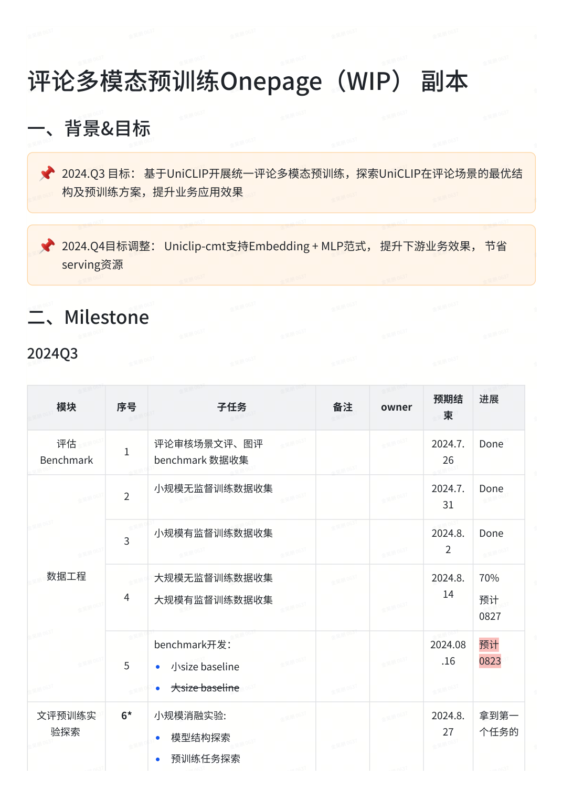
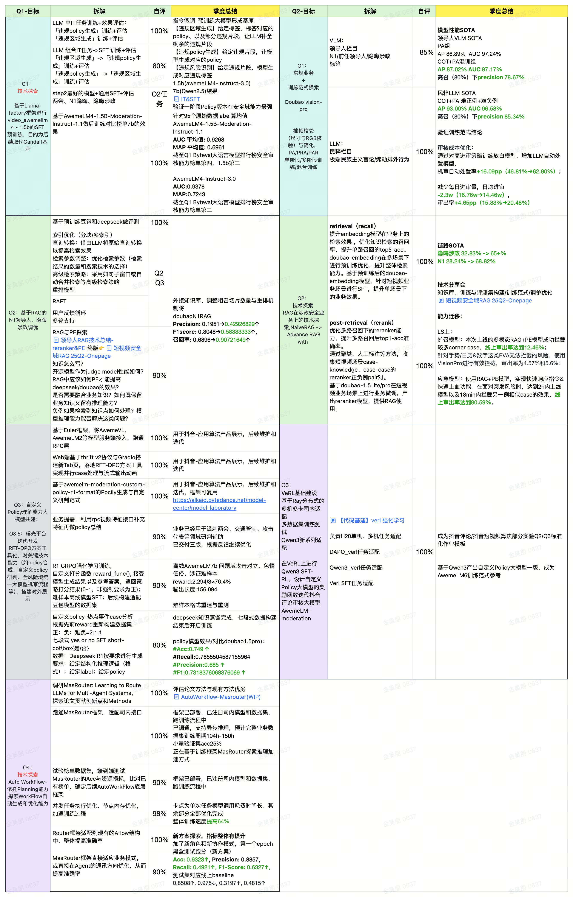

ByteDance · Safety Foundation Models · Pre-training + Post-training
AwemeLM / AwemeVL Safety Models
A public-safe summary of my ByteDance safety-model work: moderation-oriented LLM/VLM iteration, comment multimodal pre-training, RAG-enhanced policy retrieval, and standardized post-training workflows.
Background
Content safety is not a single-label classification problem. A real moderation system needs to combine policy understanding, multimodal evidence, high-recall retrieval, structured decision outputs, and fast iteration when standards change. My work centered on turning these requirements into trainable foundation-model workflows.
I worked on AwemeLM-style text reasoning models and AwemeVL-style visual safety models. The goal was to move beyond isolated classifiers toward reusable safety foundation models that can support multiple downstream moderation scenarios.
Foundation-model Context
The project sits inside a broader shift in foundation models: from larger dense Transformers toward MoE scaling, long-context memory efficiency, native or modular multimodal modeling, and reasoning-focused post-training. Public reports from Llama, DeepSeek, Qwen, Hunyuan, Gemini, Seed, and other model families point to the same engineering pattern: data quality, structured post-training, and train/infer efficiency often matter as much as raw parameter count.
- Pre-training: high-quality filtering, deduplication, multilingual/multimodal curation, and task-balanced data.
- Post-training: SFT followed by preference or reinforcement optimization such as RLHF, DPO, PPO, GRPO, or related recipes.
- Multimodal systems: either native omni models or encoder-adapter-LLM pipelines with dedicated visual/audio modules.
- Efficiency: GQA/MLA/KV-cache reduction, MoE routing, and training/inference memory planning.
Comment Multimodal Pre-training
The comment pre-training line explored a UniCLIP-cmt style base model for comment safety. The model consumes video frames, video-side text signals such as title/OCR/ASR, and comment text, then fuses them through a multimodal encoder and Transformer fusion module before downstream classification heads.
- Input modalities: video image features, video text features, and comment text.
- Architecture: multimodal encoders + Transformer fusion + MLP task head.
- Training recipe: unsupervised contrastive pre-training followed by supervised pre-training/SFT.
- Scale exploration: small, medium, and large backbones for different serving budgets.
- Deployment path: Embedding + MLP for lower serving cost and faster business iteration.

Data Engineering
- Collected text-review and image-review benchmark data for safety scenarios.
- Packaged large-scale multimodal samples into parquet-style datasets.
- Added video-side features, comment features, group embeddings, and CV features.
- Used distributed data pipelines to support high-throughput preprocessing.
- Mapped policy rules to training examples while filtering empty or invalid records.
- Supported both full-parameter fine-tuning and frozen-backbone MLP-only adaptation.
Post-training
- Explored structured SFT formats for moderation reasoning and final decisions.
- Compared thinking/no-thinking formats under latency and stability constraints.
- Investigated RL-style policy optimization with task-specific reward functions.
- Connected policy retrieval, RAG, and model outputs for faster standard updates.
- Compared answer-first, reasoning-first, and direct yes/no response formats.
Pre-training Tasks and Scale
UniCLIP-cmt used two complementary stages. The first stage aligned video/comment evidence with unsupervised ITC-style contrastive tasks; the second stage added supervised contrastive learning and classification objectives for moderation categories.
- ITC tasks: single comment to source video, violation comment to source video, and aggregated penalized-comment groups to source video.
- SCL tasks: same policy category or same update reason as positives, different categories as negatives.
- Classification tasks: binary and multi-class safety decisions on top of the fused embedding.
- Scale-up path: small deployment-friendly models, larger frozen-backbone models, and later exploration toward billion-parameter tiers.
- Evaluation: max-F1 under full fine-tuning and MLP-only adaptation, plus few-shot evaluation across multiple safety domains.
AwemeLM6 Moderation Iteration
For the AwemeLM6 moderation line, the main work was to standardize data production and post-training experiments across live, comment, short-video, and article-like scenarios. The public-safe abstraction is a model-iteration loop: extract multimodal evidence, attach policy context when appropriate, generate structured instruction data, train SFT variants, and test RL variants with stable reward templates.
- Instruction formats: PA, PAR, PRA, policy-aware, no-policy, implicit-policy, think, no-think, and auto-think variants.
- Training stacks: MindSpeed-style SFT and open-verl-style GRPO / DAPO experiments.
- Modeling trade-off: answer-first vs reasoning-first outputs, response length control, and truncation robustness.
- Evaluation focus: stability across safety domains, high-recall moderation, and deployable decision formats.
SFT / RL Loop
- Start with policy-aware SFT to make moderation outputs structured and stable.
- Convert training data into shared Parquet schemas for SFT and RL experiments.
- Use reward components for answer correctness and format compliance.
- Test SFT-to-GRPO, direct RL, and hybrid SFT/RL schedules under the same evaluation setup.
AwemeVL Layer
- Visual safety understanding for frame-level and video-level risk evidence.
- VLM outputs integrated with text-side AwemeLM reasoning when visual context matters.
- Serving path emphasized lightweight validation, RPC-style integration, and review tooling.
- Public presentation intentionally avoids sensitive visual policy taxonomies and internal metrics.
System View
The broader H1 work connected several lines: AwemeLM moderation models, VLM safety models, RAG for policy/case retrieval, VeRL-based training templates, and workflow automation. I would summarize the work as: build a safety model stack that can be trained, evaluated, deployed, and updated as business policy evolves.

Public-safe Takeaways
- Pre-training matters when the target domain has specialized multimodal signals.
- Post-training must co-design output format, reward signal, and latency constraints.
- Embedding + lightweight heads can be a strong serving trade-off for safety tasks.
- RAG helps policy iteration when standards and examples change quickly.
- Public pages should omit internal paths, API keys, full policy taxonomies, raw examples, and unreleased business metrics.